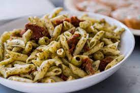

PASTA

What is creamy and fills you up to the brim with food? It has to be pasta. The best kind of unhealthy eating.
However with this recipe you will not only become unhealthy, but incredibly overweight as well. Enjoy!
Ingredients
- Pasta
- Cream Sauce
- Chicken Breast Cubes
- Broccoli
Steps
- Boil water and place pasta in until tender.
- Add oil to a pan and begin cooking up the chicken.
- Slowly start adding pasta water to prevent the chicken from burning.
- Once noodles are reaching al dente levels, start adding pasta to the pan with the pasta water a bit at a time.
- Boil the broccoli in the remaining pasta water until done.
- Mix the cream sauce and broccoli into the pan with the pasta and chicken. Mix well and enjoy!